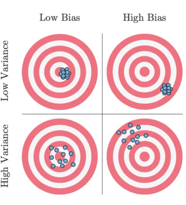

Properties of estimators
Announcements
HW 03 due TODAY at 11:59pm
Project exploratory data analysis due TODAY at 11:59pm
- Next project milestone: Presentations in March 28 lab
Statistics experience due April 22
Questions from this week’s content?
Topics
- Properties of the least squares estimator
This is not a mathematical statistics class. There are semester-long courses that will go into these topics in much more detail; we will barely scratch the surface in this course.
Our goals are to understand
Estimators have properties
A few properties of the least squares estimator and why they are useful
Properties of \(\hat{\boldsymbol{\beta}}\)
Motivation
We have discussed how to use least squares and maximum likelihood estimation to find estimators for \(\beta\)
How do we know whether our least squares estimator (and MLE) is a “good” estimator?
When we consider what makes an estimator “good”, we’ll look at three criteria:
- Bias
- Variance
- Mean squared error
Bias and variance
Suppose you are throwing darts at a target
. . .

Unbiased: Darts distributed around the target
Biased: Darts systematically away from the target
Variance: Darts could be widely spread (high variance) or generally clustered together (low variance)
Bias and variance
Ideal scenario: Darts are clustered around the target (unbiased and low variance)
Worst case scenario: Darts are widely spread out and systematically far from the target (high bias and high variance)
Acceptable scenario: There’s some trade-off between the bias and variance. For example, it may be acceptable for the darts to be clustered around a point that is close to the target (low bias and low variance)
Bias and variance
Each time we take a sample of size \(n\), we can find the least squares estimator (throw dart at target)
Suppose we take many independent samples of size \(n\) and find the least squares estimator for each sample (throw many darts at the target). Ideally,
The estimators are centered at the true parameter (unbiased)
The estimators are clustered around the true parameter (unbiased with low variance)
Properties of \(\hat{\boldsymbol{\beta}}\)
Finite sample ( \(n\) ) properties
Unbiased estimator
Best Linear Unbiased Estimator (BLUE)
Asymptotic ( \(n \rightarrow \infty\) ) properties
Consistent estimator
Efficient estimator
Asymptotic normality
Finite sample properties
Unbiased estimator
The bias of an estimator is the difference between the estimator’s expected value and the true value of the parameter
Let \(\hat{\theta}\) be an estimator of the parameter \(\theta\). Then
\[ Bias(\hat{\theta}) = E(\hat{\theta}) - \theta \]
An estimator is unbiased if the bias is 0 and thus \(E(\hat{\theta}) = \theta\)
Expected value of \(\hat{\boldsymbol{\beta}}\)
Let’s take a look at the expected value of least-squares estimator:
\[ \begin{aligned} E(\hat{\boldsymbol{\beta}}) &= E[(\mathbf{X}^\mathsf{T}\mathbf{X})^{-1}\mathbf{X}^\mathsf{T}\mathbf{y}] \\[8pt] & = \class{fragment}{(\mathbf{X}^\mathsf{T}\mathbf{X})^{-1}\mathbf{X}^\mathsf{T}E[\mathbf{y}]} \\[8pt] & = \class{fragment}{(\mathbf{X}^\mathsf{T}\mathbf{X})^{-1}\mathbf{X}^\mathsf{T}\mathbf{X}\boldsymbol{\beta}}\\[8pt] & = \class{fragment}{\boldsymbol{\beta}} \end{aligned} \]
Expected value of \(\hat{\boldsymbol{\beta}}\)
The least squares estimator (and MLE) \(\hat{\boldsymbol{\beta}}\) is an unbiased estimator of \(\boldsymbol{\beta}\)
\[ E(\hat{\boldsymbol{\beta}}) = \boldsymbol{\beta} \]
Variance of \(\hat{\boldsymbol{\beta}}\)
\[ \begin{aligned} Var(\hat{\boldsymbol{\beta}}) &= Var((\mathbf{X}^\mathsf{T}\mathbf{X})^{-1}\mathbf{X}^\mathsf{T}\mathbf{y}) \\[8pt] & = \class{fragment}{[(\mathbf{X}^\mathsf{T}\mathbf{X})^{-1}\mathbf{X}^\mathsf{T}]Var(\mathbf{y})[(\mathbf{X}^\mathsf{T}\mathbf{X})^{-1}\mathbf{X}^\mathsf{T}]^\mathsf{T} }\\[8pt] & = \class{fragment}{[(\mathbf{X}^\mathsf{T}\mathbf{X})^{-1}\mathbf{X}^\mathsf{T}]\sigma^2_{\epsilon}\mathbf{I}[\mathbf{X}(\mathbf{X}^\mathsf{T}\mathbf{X})^{-1}]} \\[8pt] & = \class{fragment}{\sigma^2_{\epsilon}[(\mathbf{X}^\mathsf{T}\mathbf{X})^{-1}\mathbf{X}^\mathsf{T}\mathbf{X}(\mathbf{X}^\mathsf{T}\mathbf{X})^{-1}]} \\[8pt] & = \class{fragment}{\sigma^2_{\epsilon}(\mathbf{X}^\mathsf{T}\mathbf{X})^{-1}} \end{aligned} \]
. . .
We will show that \(\hat{\boldsymbol{\beta}}\) is the “best” estimator (has the lowest variance) among the class of linear unbiased estimators
Gauss-Markov Theorem Proof
Suppose \(\hat{\boldsymbol{\beta}}^\prime\) is another linear unbiased estimator of \(\boldsymbol{\beta}\) that can be expressed as \(\hat{\boldsymbol{\beta}}^\prime = \mathbf{Cy}\) , such that \(\hat{\mathbf{y}} = \mathbf{X}\hat{\boldsymbol{\beta}}^\prime = \mathbf{XCy}\)
Let \(\mathbf{C} = (\mathbf{X}^\mathsf{T}\mathbf{X})^{-1}\mathbf{X}^\mathsf{T} + \mathbf{B}\) for a non-zero matrix \(\mathbf{B}\).
What is the dimension of \(\mathbf{B}\)?
Gauss-Markov Theorem Proof
\[ \hat{\boldsymbol{\beta}}^\prime = \mathbf{Cy} = ((\mathbf{X}^\mathsf{T}\mathbf{X})^{-1}\mathbf{X}^\mathsf{T} + \mathbf{B})\mathbf{y} \]
We need to show
\(\hat{\boldsymbol{\beta}}^\prime\) is unbiased
\(Var(\hat{\boldsymbol{\beta}}^\prime) > Var(\hat{\boldsymbol{\beta}})\)
Gauss-Markov Theorem Proof
\[ \begin{aligned} E(\hat{\boldsymbol{\beta}}^\prime) & = E[((\mathbf{X}^\mathsf{T}\mathbf{X})^{-1}\mathbf{X}^\mathsf{T} + \mathbf{B})\mathbf{y}] \\ & = E[((\mathbf{X}^\mathsf{T}\mathbf{X})^{-1}\mathbf{X}^\mathsf{T} + \mathbf{B})(\mathbf{X}\boldsymbol{\beta} + \boldsymbol{\epsilon})] \\ & = E[((\mathbf{X}^\mathsf{T}\mathbf{X})^{-1}\mathbf{X}^\mathsf{T} + \mathbf{B})(\mathbf{X}\boldsymbol{\beta})] \\ & = ((\mathbf{X}^\mathsf{T}\mathbf{X})^{-1}\mathbf{X}^\mathsf{T} + \mathbf{B})(\mathbf{X}\boldsymbol{\beta}) \\ & = (\mathbf{I} + \mathbf{BX})\boldsymbol{\beta} \end{aligned} \]
What assumption(s) of the Gauss-Markov Theorem did we use?
What must be true for \(\hat{\boldsymbol{\beta}}^\prime\) to be unbiased?
Gauss-Markov Theorem Proof
\(\mathbf{BX}\) must be the \(\mathbf{0}\) matrix (dimension = \((p+1) \times (p+1)\)) in order for \(\hat{\boldsymbol{\beta}}^\prime\) to be unbiased
Now we need to find \(Var(\hat{\boldsymbol{\beta}}^\prime)\) and see how it compares to \(Var(\hat{\boldsymbol{\beta}})\)
Gauss-Markov Theorem Proof
\[ \begin{aligned} Var(\hat{\boldsymbol{\beta}}^\prime) &= Var[((\mathbf{X}^\mathsf{T}\mathbf{X})^{-1}\mathbf{X}^\mathsf{T} + \mathbf{B})\mathbf{y}] \\[8pt] & = ((\mathbf{X}^\mathsf{T}\mathbf{X})^{-1}\mathbf{X}^\mathsf{T} + \mathbf{B})Var(\mathbf{y})((\mathbf{X}^\mathsf{T}\mathbf{X})^{-1}\mathbf{X}^\mathsf{T} + \mathbf{B})^\mathsf{T} \\[8pt] & = \small{\sigma^2_{\epsilon}[(\mathbf{X}^\mathsf{T}\mathbf{X})^{-1}\mathbf{X}^\mathsf{T}\mathbf{X}(\mathbf{X}^\mathsf{T}\mathbf{X})^{-1} + (\mathbf{X}^\mathsf{T}\mathbf{X})^{-1}\mathbf{X}^\mathsf{T} \mathbf{B}^\mathsf{T} + \mathbf{BX}(\mathbf{X}^\mathsf{T}\mathbf{X})^{-1} + \mathbf{BB}^\mathsf{T}]}\\[8pt] & = \sigma^2_\epsilon(\mathbf{X}^\mathsf{T}\mathbf{X})^{-1} + \sigma^2_{\epsilon}\mathbf{BB}^\mathsf{T}\end{aligned} \]
What assumption(s) of the Gauss-Markov Theorem did we use?
Gauss-Markov Theorem Proof
We have
\[ Var(\hat{\boldsymbol{\beta}}^\prime) = \sigma^2_{\epsilon}(\mathbf{X}^\mathsf{T}\mathbf{X})^{-1} + \sigma^2_\epsilon \mathbf{BB}^\mathsf{T} \]
. . .
We know that \(\sigma^2_{\epsilon}\mathbf{BB}^\mathsf{T} \geq \mathbf{0}\).
. . .
When is \(\sigma^2_{\epsilon}\mathbf{BB}^\mathsf{T} = \mathbf{0}\)?
. . .
Therefore, we have shown that \(Var(\hat{\boldsymbol{\beta}}^\prime) > Var(\hat{\boldsymbol{\beta}})\) and have completed the proof.
Properties of \(\hat{\boldsymbol{\beta}}\)
Finite sample ( \(n\) ) properties
Unbiased estimator ✅
Best Linear Unbiased Estimator (BLUE) ✅
Asymptotic ( \(n \rightarrow \infty\) ) properties
Consistent estimator
Efficient estimator
Asymptotic normality
Asymptotic properties
Properties from the MLE
Recall that the least-squares estimator \(\hat{\boldsymbol{\beta}}\) is equal to the Maximum Likelihood Estimator \(\hat{\boldsymbol{\beta}}^\prime\)
Maximum likelihood estimators have nice statistical properties and the \(\hat{\boldsymbol{\beta}}\) inherits all of these properties
- Consistency
- Efficiency
- Asymptotic normality
We will define the properties here, and you will explore them in much more depth in STA 332: Statistical Inference
Mean squared error
The mean squared error (MSE) is the squared difference between the estimator and parameter.
. . .
Let \(\hat{\theta}\) be an estimator of the parameter \(\theta\). Then
\[ \begin{aligned} MSE(\hat{\theta}) &= E[(\hat{\theta} - \theta)^2] \\ & = E(\hat{\theta}^2 - 2\hat{\theta}\theta + \theta^2) \\ & = E(\hat{\theta}^2) - 2\theta E(\hat{\theta}) + \theta^2 \\ & = \underbrace{E(\hat{\theta}^2) - E(\hat{\theta})^2}_{Var(\hat{\theta})} + \underbrace{E(\hat{\theta})^2 - 2\theta E(\hat{\theta}) + \theta^2}_{Bias(\theta)^2} \end{aligned} \]
. . .
Mean squared error
\[ MSE(\hat{\theta}) = Var(\hat{\theta}) + Bias(\hat{\theta})^2 \]
. . .
The least-squares estimator \(\hat{\boldsymbol{\beta}}\) is unbiased, so \[MSE(\hat{\boldsymbol{\beta}}) = Var(\hat{\boldsymbol{\beta}})\]
Consistency
An estimator \(\hat{\theta}\) is a consistent estimator of a parameter \(\theta\) if it converges in probability to \(\theta\). Given a sequence of estimators \(\hat{\theta}_1, \hat{\theta}_2, . . .\), then for every \(\epsilon > 0\),
\[ \displaystyle \lim_{n\to\infty} P(|\hat{\theta}_n - \theta| \geq \epsilon) = 0 \]
. . .
This means that as the sample size goes to \(\infty\) (and thus the sample information gets better and better), the estimator will be arbitrarily close to the parameter with high probability.
Why is this a useful property of an estimator?
Consistency
Consistency of \(\hat{\boldsymbol{\beta}}\)
\(Bias(\hat{\boldsymbol{\beta}}) = \mathbf{0}\), so \(\lim_{n \to \infty} Bias(\hat{\boldsymbol{\beta}}) = \mathbf{0}\)
. . .
Now we need to show that \(\lim_{n \to \infty} Var(\hat{\boldsymbol{\beta}}) = \mathbf{0}\)
What is \(Var(\hat{\boldsymbol{\beta}})\)?
Show \(Var(\hat{\boldsymbol{\beta}}) \to \mathbf{0}\) as \(n \to \infty\).
. . .
Therefore \(\hat{\boldsymbol{\beta}}\) is a consistent estimator.
Efficiency
An estimator if efficient if it has the smallest variance among a class of estimators as \(n \rightarrow \infty\)
By the Gauss-Markov Theorem, we have shown that the least-squares estimator \(\hat{\boldsymbol{\beta}}\) is the most efficient among linear unbiased estimators.
Maximum Likelihood Estimators are the most efficient among all unbiased estimators.
Therefore, \(\hat{\boldsymbol{\beta}}\) is the most efficient among all unbiased estimators of \(\boldsymbol{\beta}\)
Proof of this in a later statistics class.
Asymptotic normality
Maximum Likelihood Estimators are asymptotically normal, meaning the distribution of an MLE is normal as \(n \rightarrow \infty\)
Therefore, we know the distribution of \(\hat{\boldsymbol{\beta}}\) is normal when \(n\) is large, regardless of the underlying data
Proof of this in a later statistics class.
Recap
Finite sample ( \(n\) ) properties
Unbiased estimator ✅
Best Linear Unbiased Estimator (BLUE) ✅
Asymptotic ( \(n \rightarrow \infty\) ) properties
Consistent estimator ✅
Efficient estimator ✅
Asymptotic normality ✅